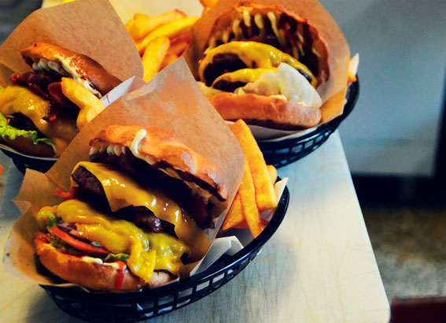
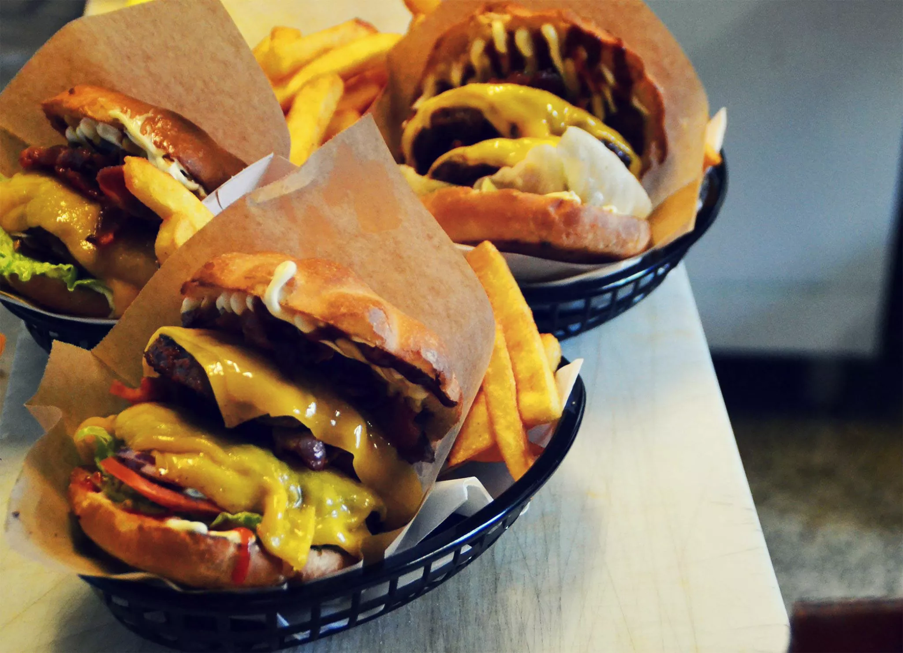

1. Find one of the images within your Case 1.1 solution. Include it in your page and test Page Load Time using online presets “Slow 3G”. Write down the result in a p-element below the image in the following form: Image name, dimensions in pixels, size in kb, time in ms.:
 Billedets originale størrelse er 2048 × 1482, og fyldte derfor hele siden. Jeg har derfor valgt at lave min width på 100%, så den tilpassr sig og derfor ikke bliver for voldsom.
Billedets originale størrelse er 2048 × 1482, og fyldte derfor hele siden. Jeg har derfor valgt at lave min width på 100%, så den tilpassr sig og derfor ikke bliver for voldsom.
2. Optimize the dimensions of the image: It must not be bigger than the maximum size you actually need in your Case 1.1 solution. Include the new image into your assignment and test the image performance. Write down the result following the form in question 1.
Har valgt at give dette billede en width på 50%, for ikke at fylde hele siden.
3. Optimize quality/compression level of the image. By “optimize” means getting the smallest file in kb as long as the visual quality stays on a level where it communicates in a good and acceptable manner in relation to your project’s overall goal. Use your eyes!

4. Finally, optimize by using the webp-format. Include the result, - both image and data into your assignment following the form in question 1. 
5. Now sum-up your findings: How much did you improve your Page Load Time?
Working with fallback strategy for WebP-format in unsupported browsers
1. Include a webp image to this assignment using the fallback strategy listed below. Test in Google Chrome and Internet Explorer. Write down your findings as part of your html-page. Hint: To be able to write html code in plain text you can use an online tool: